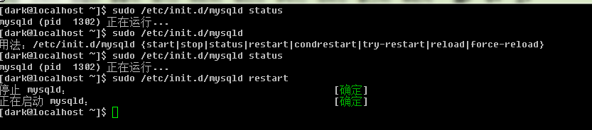

啟動關閉服務
/etc/init.d/ //下存放的是服務啟動腳本 執行之可管理服務

CentOS提供了 service 命令 使用之 其將自動將命令解析 /etc/init.d/... 執行
service [service name] [start|stop|restart]
service --status-all //將所有服務狀態列出
/etc/init.d/* //存放服務啟動腳本
/etc/sysconfig/* //各服務初始化環境配置文件
/etc/xinetd.d/ //super deamon 配置文件
/etc/* //各服務各自配置文件
/var/lib/* //各服務數據庫 mysql /var/lib/mysql
/var/run/* //各服務pid記錄處
管理系統默認服務
chkconfig //列出系統默認服務
chkconfig --list [服務名] //只查看指定無法
chkconfig [--level [0123456]] [服務名] [on|off] //開機在指定等級 啟動或不啟動 指定服務 3(純文字) 5(圖形界面) on(啟動)